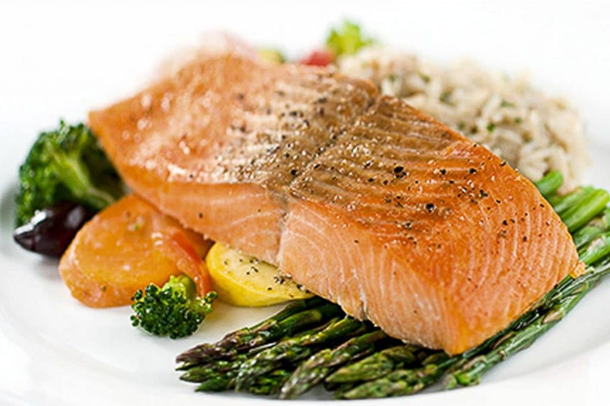

Salmon Recipe

Description goes here!
Stuff goes here
More stuff goes here
Ingredients & Kitchen Utensils Needed
- Salmon fillet (11-17 oz.)
- Butter
- Salt
- Sugar
- Black pepper
- Aluminum foil
- Measuring cups
- A small dipping bowl
- Baking sheet
Cooking Steps
- Pull out a large enough sheet of aluminum foil that allows you to prepare and wrap your salmon
- Lay your salmon fillet out on the aluminum foil (scale side down)
- Grab a small dipping bowl of butter, roughly 1/4 cup, and microwave it to melt
- Drizzle the melted butter over the salmon
- Measure a 1/2 cup of both salt and sugar, and sprinkle that over your fillet
- Grab a pinch of black pepper and sprinkle that over the fillet
- Wrap the fillet in the aluminum foil and place inside the refrigerator for 30 minutes
- Pre-heat the oven at 300 F / 149 C
- After the fillet has marinated for 30 minutes, stick it in the pre-heated oven for 30 minutes
- After 30 minutes, pull the salmon out and check the tenderness. Dinner is served!